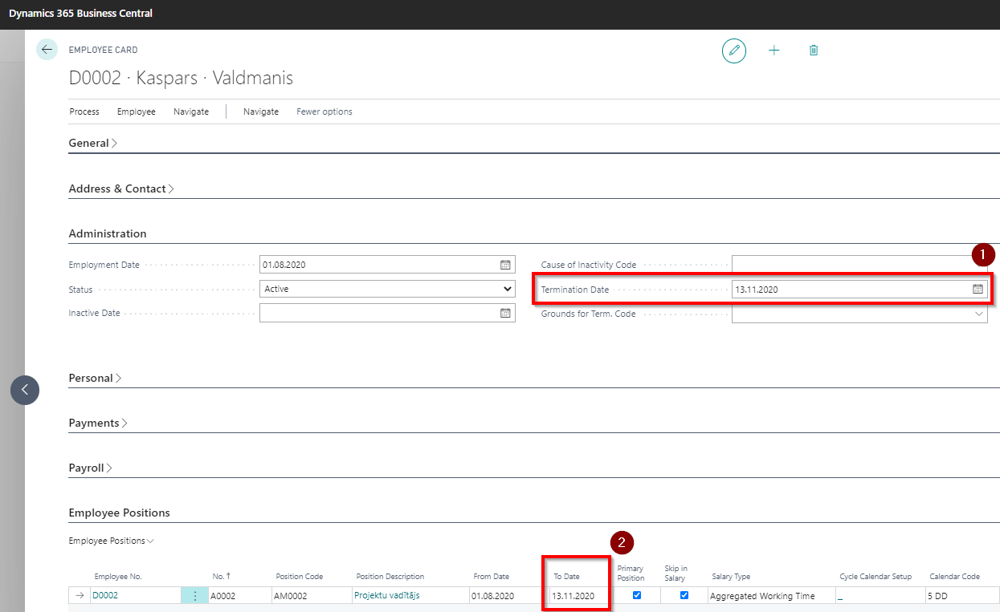

Recruitment of employees
In order to hire a new employee, a new employee card must be created. Each employee has their own card, where you must enter all available information relevant to the employee. The employee card contains all the information needed for records, calculations and reports.
All employee cards are listed in Employees.
For the convenience of users, an employee card copy function is also available for entering employees into the system (In the tool bar of the employee card press Navigate-Creating Add. Info-Copy Employee), which is convenient to use if the employee has resumed work in the company after the dismissal. However, to avoid possible mistakes (for example: in the calculation of average earnings, in the statement regarding the amounts paid to natural persons), it is recommended to create a new employee card.
Dismissal of employees
To dismiss an employee, enter the termination date in the employee card tab Administration  . By confirming date entry, system will enter this date in the Employee Position tab field To Date
. By confirming date entry, system will enter this date in the Employee Position tab field To Date  and will close all active Payroll components
and will close all active Payroll components  .
.


If in Payroll Setup tab Reports is enabled function Status Code Enabled, then after the Termination field To Date will be filled, the system will also prompt you to enter an employee status code for EDS report Employee Social Sign Codes.
When you enter the employee's termination date, the system will generate an absence record for unused vacation compensation (with code ATVAL_KOMP), which will be added automatically to the payroll calculation.
The necessary allowances or deductions for the final calculation may be added to the Components Register.
Preparing a report buffer (PFPIS list) for the EDS Statement on amounts paid to a natural person, in the tab's General Info field Month should be entered month when employee was terminated. In case of multiple employees, you can specify a termination period in the filter when generating buffer entries.